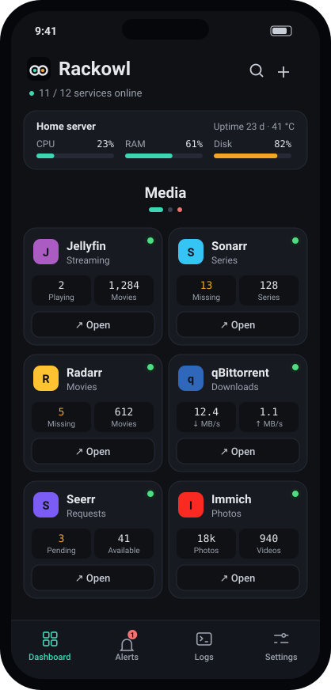
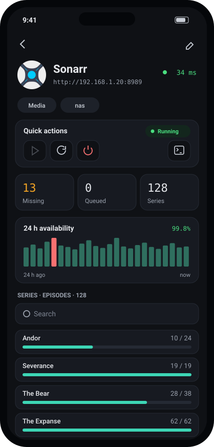
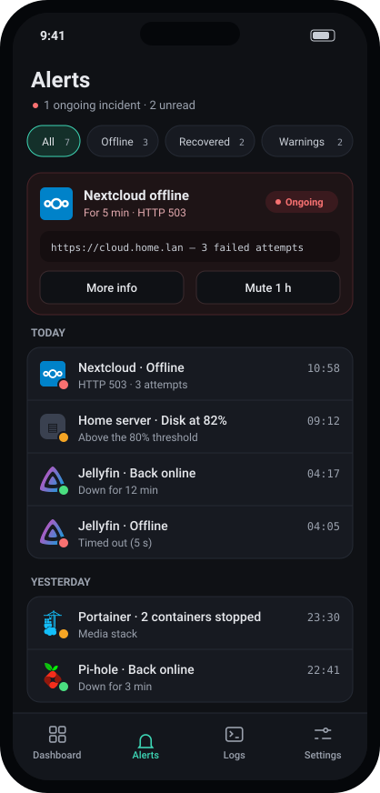
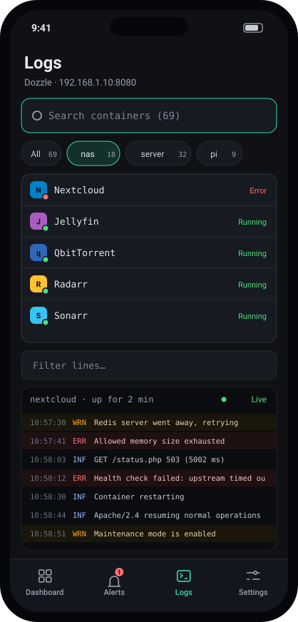

Your homelab,
in your pocket.
Rackowl keeps an eye on your self-hosted services: availability, live stats from every service’s API, container control, Docker logs and home-screen widgets. No server to install, no account to create.

Everything at a glance
A dark, quiet interface designed for a quick look between two things: green means fine, red means look.



Built for homelabbers
Everything Homepage shows on your browser, plus what a phone does better: notifications, widgets, and a quick restart from the couch.
156 Homepage widgets
Sonarr, Jellyfin, Proxmox, OpenMediaVault, Pi-hole, Komodo and the rest of the catalogue. Pick which stats each tile shows.
Container control
Start, restart or stop a container through Docker or Komodo, with a confirmation so you don’t stop the wrong one.
Alerts that make sense
Offline and back-online notifications through Android, Gotify or ntfy. Away from home without VPN? Local services pause instead of flooding you.
Live Docker logs
Follow any container through Dozzle, filter by server, text or level, pause and export.
Add from a container
Pick a host, then a container: name, icon, integration and URL are filled in for you.
Home-screen widgets
Service status, server resources and a single service, right on your home screen. Optional always-on monitoring, like Gotify.
Speaks your stack
Every service widget from gethomepage.dev is in the catalogue, and you can import your existing services.yaml.
Up and running in minutes
No YAML required, but bring yours if you have it.
Install the APK
Download it from the releases page and open it on your phone.
Add your sources
Docker hosts, Komodo, Glances and Dozzle, as many as you have.
Add services
By hand, from a container, or by importing your Homepage services.yaml.
Pick your alerts
Android, Gotify or ntfy, then forget about it until something breaks.
Get Rackowl
Free download for Android 8.0 and later. English and French.